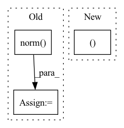

Pattern ID :3567
Before Change
edge_index = radius_graph(pos, r=self.cutoff_upper, batch=batch)
row, col = edge_index
edge_weight = (pos[row] - pos[col]).norm(dim=-1)
edge_attr = self.distance_expansion(edge_weight)
if self.neighbor_embedding:
x = self.neighbor_embedding(z, x, edge_index, edge_weight, edge_attr)After Change
def forward(self, z, pos, batch=None):
x = self.embedding(z)
edge_index, edge_weight = self.distance(pos, batch)
edge_attr = self.distance_expansion(edge_weight)
if self.neighbor_embedding:In pattern: SUPERPATTERN
Frequency: 4
Non-data size: 3
Instances Fragment ID: 17657087
Project Name: torchmd/torchmd-net
Commit Name: d6516afdd992b10536d3f20d06cdf978c4ec8bc2
Time: 2021-05-21
Author: p.thoelke@gmx.de
File Name: torchmdnet/models/torchmd_t.py
M Class Name: TorchMD_T
N Class Name: TorchMD_T
M Method Name: forward(4)
N Method Name: forward(4)
M Parent Class: nn.Module
N Parent Class: nn.Module
M File Name: torchmdnet/models/torchmd_t.py
N File Name: torchmdnet/models/torchmd_t.py
M Start Line: 99
M End Line: 101
N Start Line: 100
N End Line: 100
Before Change
edge_index = radius_graph(pos, r=self.cutoff_upper, batch=batch)
row, col = edge_index
edge_weight = (pos[row] - pos[col]).norm(dim=-1)
edge_attr = self.distance_expansion(edge_weight)
if self.neighbor_embedding:
x = self.neighbor_embedding(z, x, edge_index, edge_weight, edge_attr)After Change
def forward(self, z, pos, batch=None):
x = self.embedding(z)
edge_index, edge_weight = self.distance(pos, batch)
edge_attr = self.distance_expansion(edge_weight)
if self.neighbor_embedding: Fragment ID: 17657095
Project Name: torchmd/torchmd-net
Commit Name: d6516afdd992b10536d3f20d06cdf978c4ec8bc2
Time: 2021-05-21
Author: p.thoelke@gmx.de
File Name: torchmdnet/models/torchmd_gn.py
M Class Name: TorchMD_GN
N Class Name: TorchMD_GN
M Method Name: forward(4)
N Method Name: forward(4)
M Parent Class: nn.Module
N Parent Class: nn.Module
M File Name: torchmdnet/models/torchmd_gn.py
N File Name: torchmdnet/models/torchmd_gn.py
M Start Line: 96
M End Line: 98
N Start Line: 97
N End Line: 97
Before Change
// Confidence Loss(cosine distance to classes center)
// pos [num, num_priors]
// conf_data [num, num_priors, feature_dim]
conf_data = conf_data / torch.norm( conf_data, dim=2, keepdim=True) // [num, num_priors, feature_dim]
batch_conf = conf_data.view(-1, self.num_classes).mm(self.imprinted_matrix.t()) * self.scale // [n_way, num_classes]
// Compute max conf across batch for hard negative mining (logit-combined)After Change
// conf_data [num, num_priors, feature_dim]
features = [conf_data.view(-1, self.num_classes)]
for i in range(3):
new_features = (self.denselayer1, self.denselayer2, self.denselayer3 )[i](*features)
features.append(new_features)
batch_conf = new_features * self.scale // [n_way, num_classes]
Fragment ID: 17657094
Project Name: ze-yang/context-transformer
Commit Name: fdad2f0570a1a57d0925ef2ff8b6a15611f910b5
Time: 2019-03-08
Author: 981435961@qq.com
File Name: layers/modules/multibox_loss_combined_imprinted.py
M Class Name: MultiBoxLoss_combined
N Class Name: MultiBoxLoss_combined
M Method Name: forward(4)
N Method Name: forward(4)
M Parent Class: nn.Module
N Parent Class: nn.Module
M File Name: layers/modules/multibox_loss_combined_imprinted.py
N File Name: layers/modules/multibox_loss_combined_imprinted.py
M Start Line: 71
M End Line: 107
N Start Line: 108
N End Line: 112
Before Change
out = out + self.mean
if self.dipole:
out = torch.norm( out, dim=-1, keepdim=True)
if self.derivative:
dy = -grad(out, pos, grad_outputs=torch.ones_like(out),
create_graph=True, retain_graph=True)[0]After Change
representation = self.representation_model(z, pos, batch=batch)
if len(representation) == 5:
x, v, z, pos, batch = representation
else:
v = None
x, z, pos, batch = representation Fragment ID: 17657088
Project Name: torchmd/torchmd-net
Commit Name: bd6d4b9640f3d2fafec28736c88fe1f2d0e0dda7
Time: 2021-07-14
Author: p.thoelke@gmx.de
File Name: torchmdnet/models/output_modules.py
M Class Name: OutputNetwork
N Class Name: TorchMD_Net
M Method Name: forward(4)
N Method Name: forward(4)
M Parent Class: nn.Module
N Parent Class: nn.Module
M File Name: torchmdnet/models/output_modules.py
N File Name: torchmdnet/models/output_modules.py
M Start Line: 54
M End Line: 84
N Start Line: 131
N End Line: 162